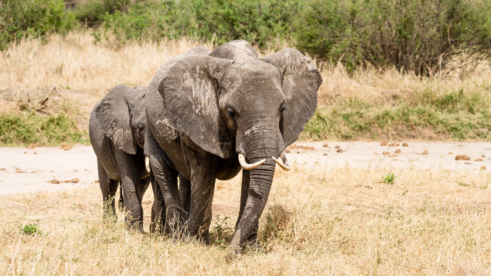

01 / WILDLIFE SAFARIS
01 / WILDLIFE SAFARISTanzania safaris
Private game drives in Tarangire, Ngorongoro and the Serengeti, with camping and lodge options.
Compare safari itinerariesKILIMANJARO · SAFARI · ZANZIBAR
I’m David, a local guide from Marangu. I help you plan Kilimanjaro treks, wildlife safaris and Zanzibar stays, with time for the places and people along the way.
YOUR JOURNEY STARTS HEREFrom mountain trails to the Indian Ocean.
EXPLORE TANZANIA
Choose a safari, mountain trek, island stay or local day. I’ll help you work out the time, transfers and accommodation needed to bring the trip together.
01 / WILDLIFE SAFARISPrivate game drives in Tarangire, Ngorongoro and the Serengeti, with camping and lodge options.
Compare safari itineraries 02 / KILIMANJARO TREKS
02 / KILIMANJARO TREKSCompare Marangu, Machame and Lemosho. Prefer a shorter visit? Explore the rainforest on a day hike.
Choose your route 03 / ZANZIBAR
03 / ZANZIBARStone Town walks, spice farms and guided snorkelling, with time to relax by the sea.
Explore island experiences 04 / LOCAL DAY TRIPS
04 / LOCAL DAY TRIPSWaterfall walks, Chagga coffee and guided visits around Moshi, Marangu and Arusha.
Find a day trip
MEET YOUR LOCAL CONTACT
I’m David Amani Lyamuya, a local guide from Marangu in the Kilimanjaro foothills.
Marangu is my home, and Kilimanjaro is part of my guiding life. I’m building David Explora alongside my tourism management and marketing studies, bringing practical guiding experience into clear, personal trip planning.
Tell me when you can travel and what you want to experience. I’ll explain the route, discuss the guides and accommodation, and send a written itinerary and quote for your group.

David Amani Lyamuya
Local guiding · tour planning · ongoing tourism studies
Let’s talk: English and Kiswahili. I’m also developing my Spanish. Other language guides are requested and confirmed for your dates.
HOW WE PLAN YOUR TRIP
You speak with me about your plans. We work through the route, accommodation and travel arrangements so you know what you’re booking.
Share your dates, starting point, group and interests. I’ll suggest a route and explain how the travel days fit together.
Your itinerary and itemised quote name the accommodation, guides, transport, meals and fees, with any extras clearly listed.
We agree the services, payment and cancellation terms. Keep your written confirmation, pickup details and guide contact before you travel.
ITINERARIES TO START WITH
Six starting itineraries, from a camping safari to a mountain climb or island stay. Open the full plan to see the route, nights and inclusions.
 Safari
Safari
Explore the Serengeti and Ngorongoro Crater with game drives, public camping and a safari crew.
Starts Arusha
Serengeti · Ngorongoro · Arusha Kilimanjaro
Kilimanjaro
A camping route through varied mountain landscapes, with a seven-day trekking schedule and a summit attempt from Barafu.
Starts Moshi
Machame · Shira · Lava Tower · Barranco Safari
SafariRufiji River wildlife · regional destination photograph
Fly from Zanzibar for two safari camp nights, private game drives and an authorised river outing.
Starts Zanzibar airport
Zanzibar · Nyerere National Park · Rufiji River Kilimanjaro
Kilimanjaro
A western approach across the Shira Plateau, with eight mountain days and hotel nights before and after the climb.
Starts Moshi
Lemosho · Shira · Barranco · Barafu Combined journeys
Combined journeys
Three mainland safari days in Tarangire and the Serengeti, then fly to Zanzibar for two coast nights. A six-day route starting with a ready-to-go morning departure from Arusha.
Starts Arusha
Arusha · Tarangire · Serengeti · Zanzibar Zanzibar
ZanzibarZanzibar sunset · island scenery, not an included cruise
A practical island stay with two nights in Stone Town and three on the coast. Mix heritage, spice plants, Jozani forest and a tide-planned ocean day with time to rest.
Starts Zanzibar airport or ferry port
Stone Town · Spice farm · Jozani · Zanzibar coastCompare the routes at your own pace. Guide prices are per adult for the stated group; your written quote confirms the final total.
MOUNTAIN · WILDLIFE · LOCAL LIFE · COAST
Four private itinerary ideas with time for the places between the highlights. Compare the full travel days, then ask David to check the route and arrangements for your group. Compare special journeys ↗

Mountain + safari
14 days / 13 nights · 7 mountain days
A seven-day Machame climb followed by four northern safari days, with airport transfers and hotel nights connected in one plan.
Private dates · personal written quote
Explore this journey ↗
Safari + local life
8 days / 7 nights
Four northern safari days, an Arusha city walk and Marangu coffee with local hosts, connected at a practical pace.
Private dates · personal written quote
Explore this journey ↗Men’s mountain journey
9 days / 8 nights · 7 mountain days
A private Machame climb for friends, brothers or fathers with adult sons, with a steady guided pace and time to prepare.
Private dates · personal written quote
Explore this journey ↗
Culture + coast
7 days / 6 nights
Two Stone Town nights and four coastal nights, with history, spices, Jozani forest and time beside the sea.
Private dates · personal written quote
Explore this journey ↗20 DECEMBER 2026 · JOURNEYS TO SHARE
Three proposed groups, with arrival on the 19th and time to complete the journey. Choose Machame, Lemosho or the northern safari circuit. Compare dates & joining details ↗

Proposed · register your interest
Christmas summit objective · 25 Dec
Personal quote · operating arrangements and availability to confirm
Proposed · register your interest
Christmas at Barafu · summit objective 26 Dec
Personal quote · operating arrangements and availability to confirm

Proposed · register your interest
Christmas in the crater · 25 Dec
Personal quote · operating arrangements and availability to confirm

Coffee cherries · a photograph supplied by David Explora
A DAY IN MY HOME REGION
Take a day out from Moshi and get to know life in the Kilimanjaro foothills. Walk with local hosts, follow coffee from the plant to the cup, then sit down for a local lunch.
USD 75 / adult Estimate for 2 adults travelling together · includes return Moshi transport, agreed host fees, coffee activity and lunch.
Waterfalls, caves and museums can be added to your written quote. Looking for a mountain walk? Choose the separate Marangu rainforest day hike.
Village destination photos and David’s supplied coffee photos. Sources & credits.
ZANZIBAR · BETWEEN THE FOREST AND THE SEA
Choose a guided island day or spend several nights between Stone Town and the coast. Your hotel location and the tides help us plan the right order. Explore all Zanzibar experiences ↗
 Zanzibar
ZanzibarSandbank near Changuu · destination illustration
Sail out from Stone Town for a tide-timed sandbank visit, a guided swim when conditions allow and a simple island-style picnic.
Starts Stone Town seafront
Stone Town · Nakupenda sandbank · Ocean picnic Zanzibar
Zanzibar
Explore the forest habitat of Zanzibar’s red colobus monkeys, then follow the mangrove boardwalk with a local park guide.
Starts Jozani park entrance
Jozani-Chwaka Bay · Red colobus · Mangrove boardwalk Zanzibar
ZanzibarMichamvi coastal landmark · restaurant not included
Explore suitable snorkelling water off the Michamvi coast with a marine guide. A simple reef outing with equipment, a tide-aware departure and time to enjoy the coast.
Starts Michamvi launch
Michamvi · Blue Lagoon · SnorkellingZanzibarZanzibar sunset · island scenery, not an included cruise
A practical island stay with two nights in Stone Town and three on the coast. Mix heritage, spice plants, Jozani forest and a tide-planned ocean day with time to rest.
Starts Zanzibar airport or ferry port
Stone Town · Spice farm · Jozani · Zanzibar coastZanzibarJambiani coast · destination illustration
Visit Kuza Cave in the Jambiani area, hear about the local heritage exhibits and choose a freshwater swim if the conditions and your ability suit it.
Starts Kuza Cave, Jambiani
Kuza Cave · Jambiani · Swahili heritage Zanzibar
ZanzibarJozani mangroves · habitat illustration
Paddle slowly through permitted mangrove channels with a local guide. Learn how the roots shelter coastal life, with an easy pace and a tide-planned route.
Starts Confirmed mangrove launch
Zanzibar mangroves · Tidal channels · Coastal ecologyA CLOSER LOOK AT TANZANIA
Explore each destination through photographs and short travel notes, then open the itinerary that interests you.

A 4×4, an open roof and a day with room to explore. Choose a private day safari, a camping circuit or a stay in carefully chosen lodges.
Explore safari styles ↗
Begin at Marangu Gate and walk through rainforest towards Mandara Hut. Settle into a steady pace with your guide.
Explore the six-day Marangu route ↗
Walk the lanes with a local guide, pause by carved doors and hear the stories behind the waterfront. Stone Town is a living neighbourhood as well as a place of history.
Explore Stone Town on foot ↗
Explore a working market, everyday streets and public views of the railway area, then pause for tea or coffee.
See the Moshi walk ↗Photographs show the places and travel experiences. The mountain gallery illustrates the six-day Marangu route. Your quote confirms the vehicle, accommodation and local arrangements. Photo sources & credits
NOT SURE WHERE TO START?
Try a destination, an interest and a trip length. This gives you a starting idea to discuss with me, rather than a reserved tour.
WHERE WOULD YOU LIKE TO GO?
Explore the northern parks, Kilimanjaro foothills and Zanzibar. Select a destination for travel notes and tour options. Open the destination guide ↗
Approximate destination locations, not driving routes or administrative boundaries. Mainland outline: Natural Earth ↗. Zanzibar is marked offshore.

Wide plains & wildlife
Allow several days for the Serengeti and the drives that connect it to the northern circuit. Migration locations change with conditions; ask about your travel dates.
WHEN TO TRAVEL
Jun–Oct
A popular window for northern safaris. Choose camps for the wildlife areas you want to explore; river crossings remain unpredictable.
Jan–Feb
Consider the southern Serengeti/Ndutu region for a seasonal itinerary. Exact wildlife movements follow rainfall, not a fixed calendar.
Mar–May
Expect greener scenery and changing road conditions. Check camp availability and keep island boat plans flexible.
Nov–Dec
Build a route that leaves room for weather and local advice. These months can offer varied landscapes and birdlife.
Seasons vary from year to year. Ask about the conditions for your route and dates. TANAPA planning information.

A LOCAL JOURNEY. A LONGER-TERM VISION.
My own education journey has shaped this ambition. I want the business I am building to help young people facing difficult circumstances continue learning, with support based on real local needs and responsible partnerships.
Explora Education Vision · in development
See the vision and first steps ↗A proposed initiative. The first partners, budget and delivery plan are still being developed.
THE DAVID EXPLORA JOURNAL
Christmas mountain dates, shared safari plans and Zanzibar’s tides. Read practical guides by subject and bring your questions into the planning conversation. Read all the guides ↗
Starting on 20 December can mean a Christmas summit on Machame or Christmas at camp on Lemosho. Here is how the days fit together.
A seven-day northern circuit beginning on 20 December, with a Christmas crater day and the accommodation details to agree before booking.
Choose activities from your hotel location, confirm boat conditions and enjoy reefs with care.
A TRIP THAT STARTS WITH YOU
Tell David about practical assistance, mobility needs or your preferred guide language. We check the actual transport, accommodation and activities before confirming the plan.
Language guides and support arrangements are confirmed for your dates.
YOUR QUESTIONS
For advice about your dates or a particular route, send David a request.
Send your dates, group size and preferred itinerary. David will discuss availability and send a written quote. Review the services, payment instructions and cancellation terms, then keep your written booking confirmation.
Prices are estimates per international adult, based on the group size shown. Your dates, accommodation, fees and transfers affect the total. The written quote confirms your actual price and inclusions.
Yes, request a combined itinerary. Include the mountain route, recovery days, safari travel and the island transfer in your available time. David will help you choose a practical order.
Yes. The Marangu day hike explores the rainforest towards Mandara Hut. It is a day visit, with a turnaround time agreed by your guide, and does not reach the summit.
The catalogue includes private safari and day-trip options. Tell David your party size and preferences. Shared departures and language guide requests depend on availability.
LET’S PLAN YOUR TRIP
Your dates, group size and interests are enough to start. We’ll work through the itinerary and price together. For individual assistance, use the travel support enquiry or consulta en español.